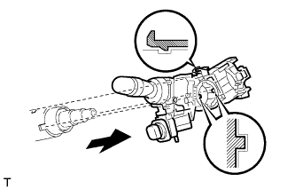

HEADLIGHT DIMMER SWITCH > REMOVAL |
| 1. DISCONNECT CABLE FROM NEGATIVE BATTERY TERMINAL |
| 2. REMOVE SPIRAL CABLE |
Remove the spiral cable (Click here).
| 3. REMOVE WINDSHIELD WIPER SWITCH ASSEMBLY |
 |
Using a screwdriver, detach the claw and remove the windshield wiper switch.
| 4. REMOVE HEADLIGHT DIMMER SWITCH ASSEMBLY |
 |
Disconnect the connector.
 |
While loosening the band clamp as shown in the illustration, detach the claw to remove the dimmer switch.